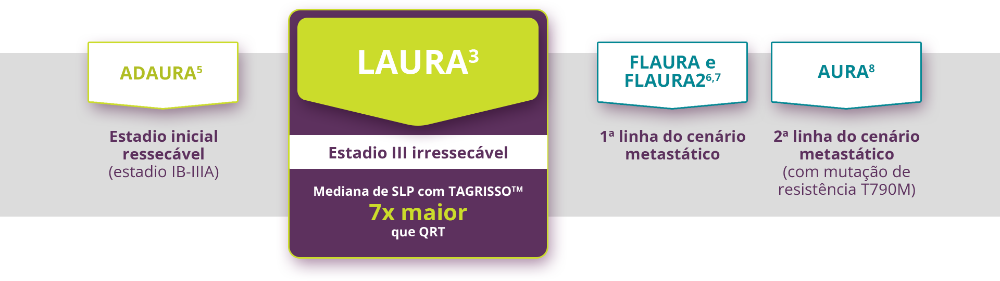
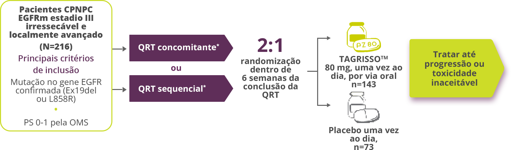

TAGRISSO™ é o padrão de tratamento em todos os estadios do CPNPC EGFRm elegíveis a tratamento sistêmico de acordo com o National Comprehensive Cancer Network® (NCCN).4

CPNPC: câncer de pulmão não pequenas células; EGFR: receptor do fator de crescimento epidérmico; QRT: quimiorradioterapia; SLP: sobrevida livre de progressão.

*Incluindo pelo menos dois ciclos de 3 ou 4 semanas ou cinco doses semanais de quimioterapia à base de platina e uma dose total de radiação de 60 gray ±10%
Após a conclusão da QRT, todos os pacientes foram submetidos a exames de ressonância magnética (RM) do cérebro3
Somente pacientes cuja doença não progrediu durante ou após a QRT foram elegíveis para randomização3
81% (50/62) dos pacientes do braço QRT + placebo tiveram crossover após progressão da doença e iniciaram uso de TAGRISSO™;
Após progressão, também foi permitida continuação do tratamento com TAGRISSO™ em caráter aberto.
Adaptado de Lu S et al. (2024)
CPNPC: câncer de pulmão não pequenas células; EGFR: receptor do fator de crescimento epidérmico; EGFRm: receptor do fator de crescimento epidérmico mutado; OMS: Organização Mundial da Saúde; QRT: quimiorradioterapia.
Adaptado de Lu S et al. (2024)
Os pacientes receberam QRT de maneira concomitante ou sequencial – incluindo pelo menos dois ciclos de quimioterapia à base de platina e um total de dose de radiação de 60 Gy ±10% (54 Gy a 66 Gy) — antes da randomização.14
Principais critérios de exclusão: história de DPI prévia à QRT, pneumonite sintomática após QRT, prolongamento do intervalo da QT ou qualquer anormalidade no ritmo considerada clinicamente importante, condução ou morfologia do ECG em repouso.14
QRT: quimiorradioterapia; SLP: sobrevida livre de progressão; DPI: doença pulmonar intersticial; QT: quimioterapia; ECG: eletrocardiograma.


AJCC: Comitê americano conjunto sobre o câncer [American Joint Committee on Cancer]; EGFRm: receptor do fator de crescimento epidérmico mutado; UICC: União internacional para o controle do câncer [Union for International Cancer Control]; QRT: quimiorradioterapia; OMS: Organização Mundial da Saúde. *A raça foi relatada pelos investigadores. †As pontuações de status de desempenho da OMS variam de 0 a 5, com números mais altos indicando maior incapacidade. ‡Os estágios da doença são classificados de acordo com a oitava edição do Manual de estadiamento do câncer de AJCC-UICC e são resumidos com base nos dados inseridos no formulário eletrônico de relato de caso. §Esta categoria incluiu dois pacientes com características histológicas adenoescamosas e um paciente com características histológicas de carcinoma adenoescamoso. A classificação foi feita com base nos dados inseridos no formulário case-report. II Um paciente no grupo de osimertinibe foi submetido à randomização sem um resultado positivo aprovado no teste de EGFR local ou central. ¶O tipo de quimiorradioterapia foi resumido com base nos dados inseridos no formulário eletrônico de relato de caso. #As respostas foram avaliadas pelo investigador. **As lesões-alvo que não foram avaliáveis não atenderam aos critérios de doença progressiva e não foram mensuráveis após a quimioterapia. †† O tamanho da lesão-alvo foi determinado por revisores centrais independentes que desconheciam as atribuições do grupo do estudo clínico.


SLP: sobrevida livre de progressão; BICR: comitê de revisão central independente e cego; IC: intervalo de confiança; HR: hazard ratio. *Desfecho primário no LAURA.1 † As taxas de SLP em 12 e 24 meses não foram projetadas para mostrar significância estatística.
SLP EM SUBGRUPOS PRÉ-ESPECIFICADOS


SLP: sobrevida livre de progressão; IC: intervalo de confiança; HR: hazard ratio: QRT: quimiorradioterapia; NC: não calculável; EGFRm: receptor do fator de crescimento epidérmico mutado; PH: proportional hazard (riscos proporcionais).


SNC; sistema nervoso central; QRT: quimiorradioterapia; SLP: sobrevida livre de progressão; NC: não calculável; HR: hazard ratio; IC: intervalo de confiança; RECIST: Response Evaluation Criteria In Solid Tumours.


REAÇÕES ADVERSAS OCORRENDO EM ≥10% DOS PACIENTES RECEBENDO TAGRISSO™3


No braço de TAGRISSO™ (N=143), a maioria dos pacientes que apresentou pneumonite por radiação teve eventos de Grau 1 (21/143) ou Grau 2 (44/143), com três eventos de Grau 3 e nenhum evento de Grau 4/53


Adaptado de Lu S et al. (2024)
DPI: doença pulmonar intersticial; EA: evento adverso.


EGFR-TKI: inibidor de tirosina quinase do receptor do fator de crescimento epidérmico; CPNPC: câncer de pulmão não pequenas células; EGFRm: receptor do fator de crescimento epidérmico mutado; PBO: placebo; NCCN: National Comprehensive Cancer Network®; SNC: sistema nervoso central.
1. DOU 2. Bula TAGRISSO™
(osimertinibe) 3. Lu S, et al.; LAURA Trial
Investigators. Osimertinib after Chemoradiotherapy in Stage III
EGFR-Mutated NSCLC. N Engl J Med. 2024 Aug 15;391(7):585-597
[Artigo e Protocolo]. 4. NCCN Clinical Practice
Guidelines in Oncology. Non-Small Cell Lung Cancer. Versão 11.2024.
Disponível em: https://www.nccn.org/professionals/physician_gls/pdf/nscl.pdf.
Acessado em 04 de outubro de 2024. 5. Herbst RS,
et al. Adjuvant Osimertinib for Resected EGFR-Mutated Stage IB-IIIA
Non-Small-Cell Lung Cancer: Updated Results From the Phase III
Randomized ADAURA Trial. J Clin Oncol. 2023 Apr
1;41(10):1830-1840. 6. Ramalingam SS, et al.
Overall Survival with Osimertinib in Untreated, EGFR-Mutated
Advanced NSCLC. N Engl J Med. 2020 Jan 2;382(1):41-50.
7. Planchard D, et al. Osimertinib with or without
Chemotherapy in EGFR-Mutated Advanced NSCLC. N Engl J Med.
2023;389(21):1935-1948 [Artigo e Suplemento]. 8.
Mok TS, et al. AURA3 investigators. Osimertinib or
Platinum-pemetrexed in EGFR T790M-Positive Lung Cancer. N Engl J
Med. 2017 Feb 16; 376(7):629-640. 9. Lu, S. et al.
Osimertinib after definitive chemoradiotherapy in unresectable stage
III epidermal growth factor receptor-mutated non-small-cell lung
cancer: analyses of central nervous system efficacy and distant
progression from the phase III LAURA study. Annals of Oncology,
Volume 0, Issue 0; 2. 10. Popat, S; et al.
Osimertinib for EGFR-Mutant Non-Small-Cell Lung Cancer Central
Nervous System Metastases: Current Evidence and Future Perspectives
on Therapeutic Strategies. Target Oncol. 2023 Jan;18(1):9-24. doi:
10.1007/s11523-022-00941-7. Epub 2023 Jan 18.
Contraindicações: hipersensibilidade conhecida ao
osimertinibe ou a qualquer outro excipiente contido na fórmula do
medicamento. TAGRISSO™ não deve ser coadministrado com
Erva-de-São-João (Hypericum perforatum).
Interações medicamentosas: Indutores CYP3A:
recomenda-se que o uso concomitante de indutores potentes da CYP3A
(por exemplo: fenitoína, rifampicina, carbamazepina) com TAGRISSO
seja evitado. Reações adversas: DPI/Pneumonite,
DPI/Pneumonite após quimiorradioterapia definitiva à base de
platina: assintomático (Grau 1), DPI/Pneumonite após
quimiorradioterapia definitiva à base de platina: Grau ≥2,
Intervalo QTc maior do que 500 mseg em pelo menos 2 ECGs separados,
prolongamento do intervalo QTc com sinais/sintomas de arritmia
grave, Síndrome de Stevens-Johnson e necrólise epidérmica tóxica.
USO ADULTO. VIA ORAL. VENDA SOB PRESCRIÇÃO MÉDICA. SE PERSISTIREM
OS SINTOMAS, O MÉDICO DEVERÁ SER CONSULTADO
Para maiores informações, consulte a bula completa do produto.
www.astrazeneca.com.br Registro – 1.1618.0254.
TAG027_mini.